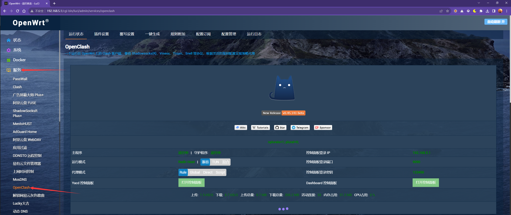
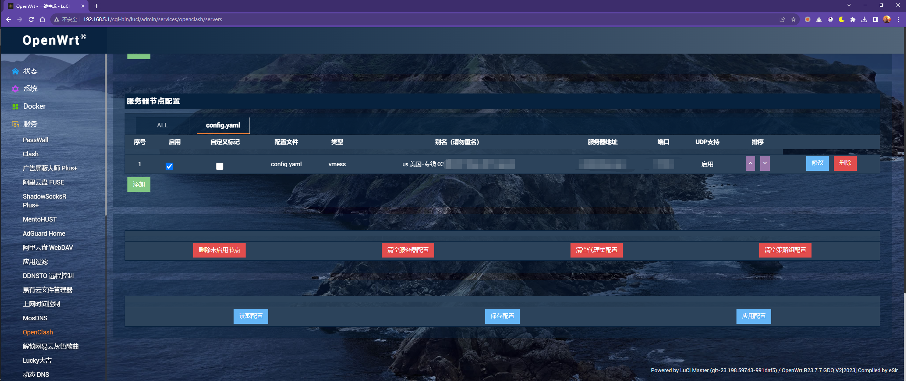
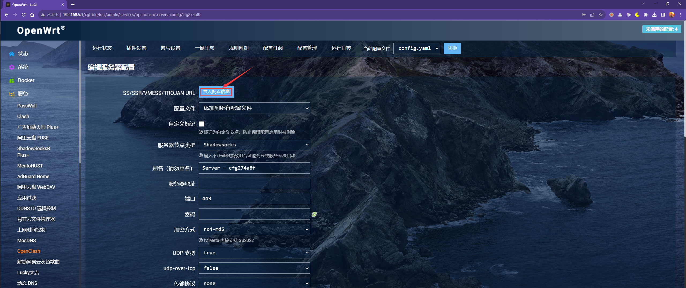
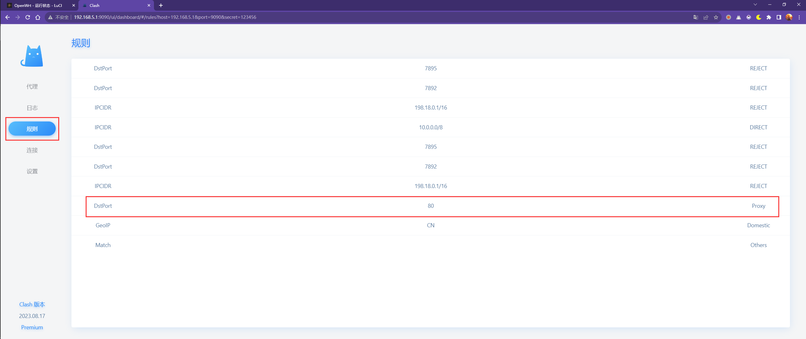
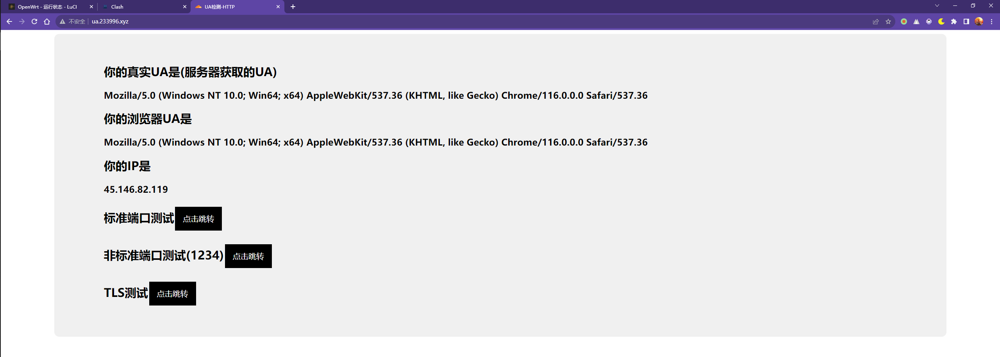

# 前言
阅读本文前，假设您已经阅读过以下参考文章，并且对路由器、网络工程等方面具有基础的知识储备。
参考内容：
自卖自夸（写得挺水的）：长沙理工大学无线网络多设备共享解决方案
校友博客：长沙理工大学：校园网解除共享限制
OpenClash 配置文件说明：Github Wiki
说明：本文内容仍然是独立的，不看前面的文章也没事，不过有空最好看看（
# CSUST 检测 / 封禁校园网共享行为？
知己知彼，百战不殆。在解决问题之前，我们必须深入理解问题的本质和根源。
众所周知，不仅是 CSUST，基本上所有的（至少国内）高校都会做这个限制，也就是一个校园网账号只允许 1 台设备登录。取决于你的套餐不同，可能也会允许 2 台，但对于 2023 年的年轻人来说明显还是捉襟见肘。
# 为什么要做检测？
是个现代网民都清楚，每个人每天上网的设备肯定不止一台，这限制单设备在线那不是很蛋疼？
答案自然是为了利益了。如果不做任何限制，那一个校园网账号就可以很多人一起使用，例如一个宿舍几个人合租一个账号使用。
尽管多数情况下校园网带宽都很小（我校 30Mbps），但日常来说够 2 个人使用，那就可以大幅分担成本，进而导致运营商利益受损。（虽然这 30M 的价格也贵得跟家庭宽带一样了）
毕竟校园环境跟家庭和商业不同，后者都是私有的，极少数家庭会愿意跟邻居分享同一个网络，更别说商用网络还涉及安全和机密问题。
# 怎么做到检测的？
这是一个复杂的问题。
首先我们要理解你在连接校园网之后是怎么成功上网的。通常来说学校会在校内设置防火墙和认证服务器，你在连接到校园网的 WiFi 或者有线设备之后，防火墙设备会阻断你的所有网络流量；这时候就需要向认证服务器发送自己的登录信息，服务器再通知防火墙 “放行” 你的网络流量。
在理解这个简化的流程之后，很容易就能理解如何直接检测多个设备在线；如果有一台设备已经通过了认证，此时有第二台设备试图认证，则认证服务器就会拒绝（或者把第一台设备 “踢” 下线），总之同一时间内只能有一台设备处于 “放行” 状态。
但是，稍微了解一点网络知识的同学肯定知道，我们家里的路由器也跟学校环境类似，它对外只显示为一台设备，但路由器下可以连接很多设备。依赖于 NAT（网络地址转换）技术，路由器就可以实现这样的操作。
那有人就要想了，我直接在校园网下接一台路由器不就行了，或者干脆用电脑上的无线热点来共享？显然，这种问题当然也会被运营商考虑到，因此就有了如下的各种深入检测方式。
以下只说我目前根据自己实验的结果认为学校可能用到的方法，其他方法可以网上搜索或者查看参考文章。
# MAC（IP）绑定规则
在这个网址里可以点击 “设备绑定”，查看你的校园网账号目前绑定了哪些 MAC 地址。我目前还不是完全理解这个绑定的含义，但每次认证成功后我的设备 MAC 至少会出现在第一行中。
为什么要提这个事？因为 MAC 地址绑定是第一个坑，它甚至都算不上共享检测的范畴。这里，还需要解释一下我校的 IP 分配与认证规则。
- 在我的路由器初次连接校园网后，首先会分配到一个随机的 IP 地址（在我宿舍里是 10.151.x.x）
- 完成认证后，可以上网，但这个 IP 地址不会变化；
- 手动重新连接校园网，通常这时不用重新登录认证（因为已经绑定到账号上了），但 IP 地址会发生变化（10.149.x.x）
以上规则是我在路由器上首先发现的，因为在用电脑的时候不会经常关心自己的 IP 地址。然而，我猜测电脑也会经历类似的过程。
这里的关键是，151 这个地址是未认证的时候分配的，即使认证成功了也并非学校 DHCP 服务器里绑定的那个设备；最后直接的结果就是，过了 5-15 分钟左右（有时候是 30-60 分钟）就会断网，尽管学校网站后台会显示 151 地址正常在线。此时必须手动重连 WiFi 才能解决，因为重连后就能获取到 149 地址，这个才是真正认证成功的地址。
根据我个人的猜测，很多电脑在连接校园网后没过多久就会自己断网，可能也是这个原因导致的；这个现象在 2024 学年开始时就不太常见了，但仍然影响路由器上网，所以在认证之后记得重连 WiFi，如果地址不能变化就等一会再重连（或者重启路由器）。
# HTTP 流量的 UA 检测
HTTP 协议是访问各种网站、app 内容的最常见协议之一，也就是我们看到网址前面的那个前缀。
这里简单说明一下 HTTP 协议的基本特点：HTTP 协议默认端口为 80，使用 TCP 连接，所有数据不经过加密、直接明文传输。
而 HTTPS 则是 HTTP 的加强版（加密版），它解决了数据加密问题，你和服务器之间传输的数据都经过加密、无法被第三方直接获取查看；默认 443 端口。
这里的重点是，HTTP 协议规定了报文的格式，其中包含了很多终端信息。其中被用于检测的就是 User-Agent 字段，简称 UA。
UA 对于现代网络环境来说十分重要，因为它会告诉服务器许多设备信息，例如使用的操作系统、浏览器类型和版本等，并且这个字段的内容是高度可自定义的。有时候你会收到一个微信链接，当你想在电脑或者其他浏览器上打开的时候网页就会提示你 “请从微信客户端打开链接”，实际上是因为各类 app 都会设置自己的 UA，而网页检测到你的 UA 不是微信的就会拒绝发送内容。此外，网页还可以根据 UA 判断用户设备类型，从而给手机和电脑用户分别提供不同布局的网页，优化用户体验（或者恶心用户，逼你下载 app；技术没有好坏，取决于如何使用）。
那么，学校具体如何检测 UA 呢？简单来说，因为 HTTP 报文内容不加密，任何人都可以获取到你发送和接收的内容。学校防火墙会抓取你在 80 端口发送的 HTTP 报文，然后记录其中的关键词，如果触发规则就断网。举例来说，如果你的电脑和手机同时在上网，那么你的路由器发出的 HTTP 报文就会有两种，一种是 Windows、另一种是 Android，显然这可以说明用户在同时使用电脑和手机两种设备，就可以触发断网规则。
还有一点需要注意，也许你会发现平时访问的网页基本上全都是 HTTPS 开头的，也就意味着网页经过了加密，为什么学校还能轻松做到检测呢？答案很简单，因为 HTTP 报文是不可避免的。很多网页在初次访问的时候都是先使用 HTTP，服务器给你一个跳转的响应，你的浏览器才会转为使用 HTTPS；而且还有很多毒瘤国产 app 都是直接明文传输大量内容（文末会讲到哪些 app 主要可能触发检测），就连 QQ 都在使用不加密的 HTTP 协议传输一些数据。
# 总结和其他
在校友博客文章中还提到了其他检测内容，包括 TTL 值、设备时间戳、IPID 检测，甚至还有主动侵入式检测，在 2023 年 9 月均已不存在。原文还描述了防火墙断网后会让用户跳转到 1.1.1.3… 之类的网页，实测在 Wifi 连接的情况下已经不存在（似乎以前有，但现在没了？）。
此外，在触发规则断网后，除了有些 app 和网页建立了长连接可能暂时没有被阻断以外，所有软件和网页都会失去网络连接，但 DNS 的请求是正常的，也就是说 53 端口在这种情况下是打开的。印象中如果你连了 WiFi 但不完成登录认证，53 端口上的 DNS 请求似乎也是正常的。如果你想白嫖网络的话，可以搭建 VPN over DNS 服务器，当然这些都是跑题内容了。
# 如何绕开检测？
实际上真正参与检测的只有一个条件，那就是 80 端口的 HTTP 报文中 UA 字段的差异检测。针对这个条件，我们可以有两种绕过方法。
- 在路由器上处理所有满足条件的包，将其 UA 替换为统一内容；
- 通过代理服务器转发请求，把符合条件的包加密之后发送到代理服务器上，然后使用代理上网。
以下内容基本都需要 OpenWrt 系统
# 修改 UA（方法一）
再次提醒，只把手机浏览器里的 UA 改成电脑是不够的，因为前面说过了，很多 app 都会定义自己的 UA，这个内容你没法直接在 app 里修改，只能在路由器上执行。
修改的方法有很多种，这里只做推荐，不做教程，因为所有的方法我都失败或者懒得做。
# Privoxy 代理插件
如果你在网上搜索 “OpenWrt 修改 UA” 这样的关键词，那么多数文章会告诉你使用 Privoxy 插件。根据大家的评价，它的操作相对简单，但问题是极大地影响网络速度。虽然我也不确定在 30M 本身就这么低的速度下会影响多少，不过仍然是需要注意的点。
补充：似乎是性能影响较大，如果你用的是 MT7621 这种高性能处理器或者 x86 软路由则不用担心。
具体方法自行查找网络教程。我本来想用这个的，但是不知道为什么网页界面不能正常渲染，所有的保存按钮都消失了，反复尝试修复无果，放弃。
优点：不用自己编译，操作相对简单
缺点：兼容性问题，网络性能问题
# UA2F 插件
这是一个国内的受害者（x）大佬开发的插件，功能更强大但配置甚至更精简。
项目地址：https://github.com/Zxilly/UA2F
使用方法可以参考作者博客文章，在 readme 里就能看到链接。这个我成功安装了，但是运行的时候报错失效，放弃。
优点：基本上也不用自己编译，没有复杂的配置，似乎可以即插即用；还能修改多个端口的 UA
缺点：还是兼容性问题，以及许多人报告的稳定性问题
# xmurp-ua 插件
这是另一个大佬写的内核级插件，效率较高，适合性能差的路由器。
项目地址：https://github.com/CHN-beta/xmurp-ua
使用方法：https://github.com/tonytt0624/GDUF-Web/issues/1#issuecomment-825767613
优点：处理速度快，甚至也是即插即用、无需配置
缺点：基本上没有成品插件，要自己编译
（别以为自己编译是个什么轻松事，真的；除非你是相关专业学生或者已经对 Linux 有很好的理解，否则都不建议自己编译东西。网上的教程鱼龙混杂，也有时效性问题，跟着教程走都很难一次成功。当然你可以说这也是折腾的过程，但是说实话真的很痛苦，我唯一一次尝试用 Ubuntu 的那几天连做梦都是报错 (T_T)
# 加密代理穿透（方法 2）
这个方法的灵感是这篇文章：全新方案 - 懒人福音 - 无需手动编译修改 UA - 校园网防检测
其实加密穿透不是什么新鲜事，在我折腾 openwrt 之前我是只用了一个 padavan 路由器，那会我就有个很暴力的方法；因为我家人是有一个办公室，里面办的商用宽带，有自己的公网 IP，那玩意上传速度有百兆，而办公室里的网络需求基本局限于收发 word 文档和简单网页办公，平时都是大量带宽富余；然后那个办公室里有一台常开的服务器，并且我可以直接远程控制，所以我就在那里搭建了一个 V/P/N 服务器，然后在路由器上远程连接过去。
但是这个方案缺点很明显，这个办公室在深圳，而我在长沙，也就是说所有的网络流量都要往返几百公里的地理距离才能到达；尽管延迟只增加了 20ms，但网速受影响非常剧烈，尤其是和机场的通信非常难建立连接。再者，如果你没有这个条件的话，自己搭建一台流量超多、带宽非常充足的代理服务器，这个资金消耗是极其夸张的，如果你真有这个钞能力的话… 那还看啥折腾文章啊，我建议直接多开几个校园网账号（）
说回正题，最开始我看到这个文章的时候很开心，想着这么简单的方法怎么没见别人说。结果自己折腾了才知道其中到底有多少坑 QAQ… 为了不让更多人重复这些坑，我把过程写在这里。
# 使用方法
要使用这个方法，首先你要有一个代理服务器。别着急，如果你已经在使用机场来翻过长城防火墙的话，那么你已经拥有了一个可用的代理服务器。如果没有，我推荐你找一家机场，价格很低的（
注意购买机场的话需要买带 clash 订阅的，然后获取到服务器的信息（用 v2ray 或者 clash 客户端应该都能）。
随后，你需要在 openwrt 里安装 openclash 插件，然后安装 clash 内核。这个过程通常可能会由于网络环境问题而失败，你可以尝试在顶上的 “覆写设置” 里将 “Github 地址修改” 设为其中某个地址，然后重新启动插件让它下载。（实际上这个过程折腾了我三个小时，非常艰难地安装成功了）
这里插一句，我推荐直接用软路由，现在一百多块能买到那种迷你主机，因为软路由能直接用高大全固件，硬件配置也好得多，比很多硬路由折腾起来方便。（当然部分硬路由会有大佬定制好的固件，这个另说）
安装好之后，在服务列表里点开 openclash。

这里是最重要的部分了。openclash 的配置非常混乱并且复杂，有兴趣可以自己学习，但我在折腾了一整天之后觉得直接看配置文件是最省事的方法。
如果你是懒人，那你直接复制我的配置文件，然后修改其中的服务器信息即可使用。
点上面的 “配置管理”，页面底下有一个文本编辑器，左边就是当前的配置文件内容，进行修改即可。
# 下面这个proxies就是代理服务器列表，一般添加一个即可；里面的每一行内容都按照自己的服务器信息填写，否则无法使用。
# 如果有些信息你找不到，可以不管；基本上必要的就是前面6行。
proxies:
- name: "代理服务器名"
type: vmess # 改成你的服务器类型
server: "服务器地址"
port: 端口号
uuid: 填写你客户端里的uuid
alterId: 0 # 按实际情况填写
cipher: auto
udp: true # 不支持UDP转发的节点写false
xudp: true
global-padding: false
authenticated-length: false
skip-cert-verify: true
tls: false
ip-version: "dual"
tfo: true
smux:
enabled: false
proxy-groups:
- name: Auto - UrlTest
type: url-test
proxies:
- "代理服务器名"
url: http://cp.cloudflare.com/generate_204
interval: "600"
tolerance: "150"
- name: Proxy
type: select
proxies:
- Auto - UrlTest
- DIRECT
- "代理服务器名"
- name: Domestic
type: select
proxies:
- DIRECT
- Proxy
- name: Others
type: select
proxies:
- Proxy
- DIRECT
- Domestic
rules:
- IP-CIDR,10.0.0.0/8,DIRECT # 这里是我添加的，在访问校内网站时不经过代理
- DST-PORT,7895,REJECT
- DST-PORT,7892,REJECT
- IP-CIDR,198.18.0.1/16,REJECT,no-resolve
- DST-PORT,80,Proxy # 这一行是让所有目标为80端口的流量走代理
- GEOIP,CN,Domestic
- MATCH,Others服务器信息哪里获取？我使用的是 v2ray 客户端，在订阅了机场给的链接之后双击服务器即可查看信息。
如果实在要自己生成配置或者怕错，也可以用插件内置的功能。
点击 “一键生成”，按下图简单设置：

滑动到页面下方，在 “服务器节点配置” 里添加服务器：

点击 “导入配置信息”，将目标服务器的分享链接（不是订阅链接！）粘贴到弹窗里，保存配置

最后，在页面最下方先后点击 “保存配置” 和 “应用配置”。如果点了一个就自动跳转回首页，那就再点回来。
点击应用之后，客户端就会自动启动。在顶上的 “运行日志” 里可以看到信息。应该会自动下载很多配置文件，在启动的时候可能会报错，这个不用管。
配置文件生成之后，点回上面的配置管理，下面的配置文件里就能找到 proxies 的内容；复制这一段出来就能用了。
注意：请不要直接使用一键生成的配置，因为它似乎会覆盖 80 端口，自己加规则也不能实现代理转发
最后，确定插件启动，进入管理页面检查规则列表，如果显示了 DST PORT 80 proxy 这一行即可（要在 Dashboard 面板里才能看到）

# 测试结果
简单测试一下，你可以对着日志看，或者在这里测试：http://ua.233996.xyz/

这个网站本来是测 UA 的，如果你部署的是 UA 修改插件也可以用这个检查（其他网站也行，但要确保是 HTTP 的，不能是 HTTPS 的）
# 一些问题
在部署成功之后我才发现，原来那么多软件都在走 80 端口传输明文信息，难怪都吐槽安全性差；然后这样也会影响一些网络性能，主要是一些手机和电脑软件会用 HTTP 传输信息，而这部分内容现在要走代理，速度和连接用时都受影响。此外，也会导致你的机场记录更多流量，所以记得选购流量多一点的套餐。
# 容易触发检测的 app
最后，列出我最近一周时间里实验发现的一些毒瘤 app，一旦使用就可能触发检测和断网。
以下内容均基于经验和猜测，准确性未知，但可以提供部分参考。
此外，牢记检测条件是电脑和手机同时发送报文，如果只有一种设备在线浏览的话检测概率会降低。
微信：检测概率接近 0%，微信的网页浏览器极少数情况下会触发，基本不用担心。
QQ：检测概率 2~5%，刷 QQ 空间时触发
饿了么：检测概率～10%，浏览商家页面时触发
淘宝：检测概率～50%，获取消息、物流信息等触发
米游社：检测概率～5%，获取玩家信息、合集内容等触发
交通银行 app：检测概率～70%，正常浏览内容时触发
国家开发银行（网页）：检测概率～100%，打开网站即触发
学习通：检测概率～100%，任意使用 app 功能触发【最毒瘤的软件，基本上开一次断一次】
那些有电脑版的软件大多不会触发，包括微信、QQ、网易云音乐等，因为电脑和手机软件大概率是用的同一个 UA，并且通常不包含操作系统信息。
校内网站虽然基本上都是 HTTP，但因为正常情况下你访问的时候会解析到内网地址，流量根本不经过防火墙，自然也就无法检测。